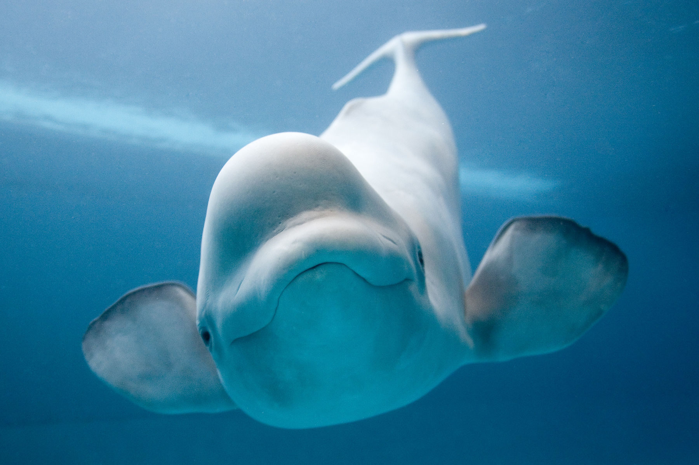

As Belugas

Onde tem baleia beluga?
- Na natureza, as baleias beluga são encontradas no Oceano Ártico e nos mares e costas do Canadá, América do Norte, Rússia e Groenlândia. São animais migratórios, capazes de nadar milhares de quilómetros e mergulhar a profundidades superiores a 900 metros, entre blocos de gelo e fiordes, dizem os especialistas.
- A baleia-branca, beluga ou beluca é uma espécie de cetáceo odontoceti que habita a região ártica e subártica. Assim como outros representantes deste grupo, estes animais possuem apenas um orifício respiratório. As belugas não têm barbatana dorsal, daí o nome “golfinho sem barbatana”.
Voltar a página inicial